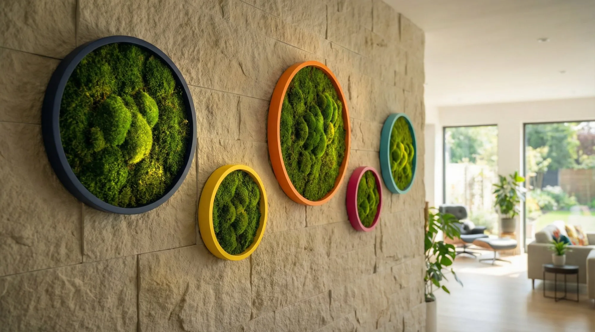

Organic design studio · Miami
Nature,
composed.
MOSU creates sculptural moss works and botanical pieces that bring a quiet, living presence into the spaces around us.
Explore the workThe studio
We work with nature as material—preserving its texture, movement and imperfection in pieces made for a specific place.

Permanent collection
Moss Works
Sculptural circles of preserved moss, framed by color and shaped by hand.
View collection
Seasonal and singular
Botanical Pieces
One-of-one compositions made with branches, preserved botanicals and a restrained floral language.
Discover the pieces
Material / 01
Made slowly.
Kept naturally.
Our moss is carefully preserved to retain its softness, color and dimension without watering or direct light.
Every piece is assembled by hand. No two surfaces, silhouettes or compositions are exactly alike.
Meet AnaNot decoration for the sake of filling space.
A presence that changes it.